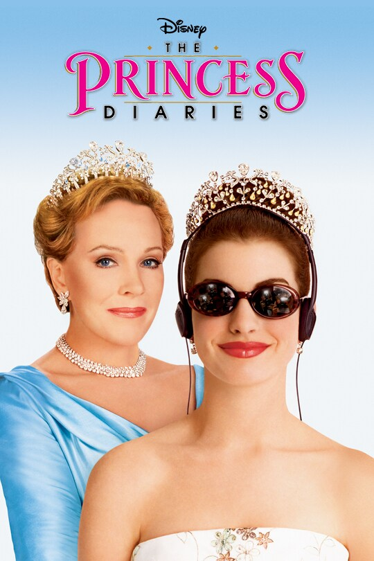
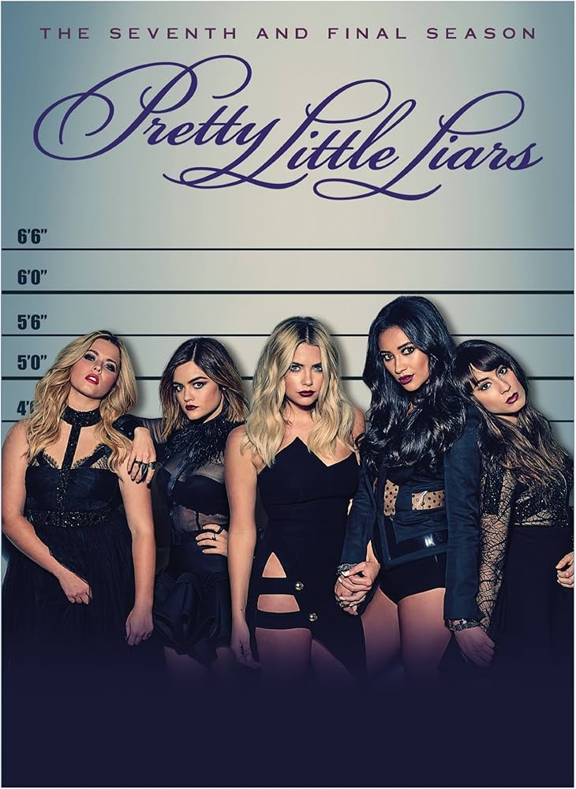

My Current Watches
Why I Love Movies and TV
I’ve always loved watching movies and TV shows that make me smile or have a great story to tell. I enjoy many different genres, but my favorites include Drama and Romantic Comedy. Watching is a great way for me to unwind and relax after a long day at school.
Favorite Movie: The Princess Diaries
The Princess Diaries is one of my all-time favorite movies! I first watched it as a little girl, and it’s one of those films I can rewatch endlessly. Anne Hathaway is such a talented actress, and the story always makes me smile.

Favorite Show: Pretty Little Liars
I really enjoy Pretty Little Liars because of its suspense, mystery, and unexpected twists. The show follows a group of friends who are trying to uncover the truth about their missing friend while being haunted by a mysterious figure known as “A.”

Favorite Comedy: Abbott Elementary
Abbott Elementary always makes me laugh. It’s an office-style mockumentary that follows teachers in a public school in Philadelphia. The show highlights hardworking educators in a lighthearted and heartwarming way. I love watching it before bed with my roommates!